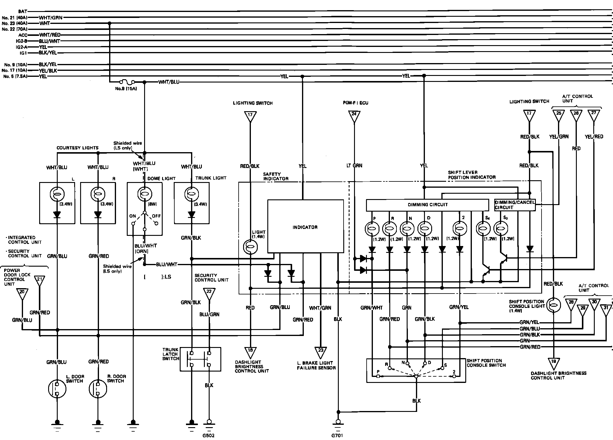

<!DOCTYPE html>
<html>
  <head>
    <title>Coupe — 1989 Acura Legend Coupe V6-2675cc 2.7L SOHC FI Service Manual | Operation CHARM</title>
    <meta name='description' content="Detailed repair manual for the 1989 Acura Legend Coupe V6-2675cc 2.7L SOHC FI.">
    <link rel='stylesheet' href="../style.css">
    <meta name='viewport' content='width=device-width, initial-scale=1.0' />
  </head>
  <body>
    <div class='theme-colors header'>
      <div class='branding'><b>Operation CHARM</b>: Car repair manuals for everyone.</div>
<div class=breadcrumbs><a class='breadcrumb-part' href="../">Home</a> <b>&gt;&gt;</b> <a class='breadcrumb-part' href="../Acura/">Acura</a> <b>&gt;&gt;</b> <a class='breadcrumb-part' href="../Acura/1989/">1989</a> <b>&gt;&gt;</b> <a class='breadcrumb-part' href="../index.html">Legend Coupe V6-2675cc 2.7L SOHC FI</a> <b>&gt;&gt;</b> <a class='breadcrumb-part' href="0.html">Repair and Diagnosis</a> <b>&gt;&gt;</b> <a class='breadcrumb-part' href="0.html#Diagrams/">Diagrams</a> <b>&gt;&gt;</b> <a class='breadcrumb-part' href="0.html#Diagrams/Electrical%20Diagrams/">Electrical Diagrams</a> <b>&gt;&gt;</b> <a class='breadcrumb-part' href="0.html#Diagrams/Electrical%20Diagrams/Map%20Light/">Map Light</a> <b>&gt;&gt;</b> <a class='breadcrumb-part' href="0.html#Diagrams/Electrical%20Diagrams/Map%20Light/Courtesy%2C%20Dome%2C%20Map%2C%20Safety%20Indicator%20%26%20Trunk/">Courtesy, Dome, Map, Safety Indicator &amp; Trunk</a> <b>&gt;&gt;</b> <a class='breadcrumb-part' href="2306.html">Coupe</a></div></div>
<div class='main'>
<h1>Coupe</h1><h3>��FCourtesy, Dome, Map, Trunk Lamp, Dimming System, Safety Indicator &amp; Shift Lever Position Indicator:</h3><div class='oxe-image'></div><br><br></div>
<div class="theme-colors footer">
  <i>pro multis</i> · <a href="../about.html">About Operation CHARM</a>
</div>
<script src="../script.js"></script>
</body>
</html>
